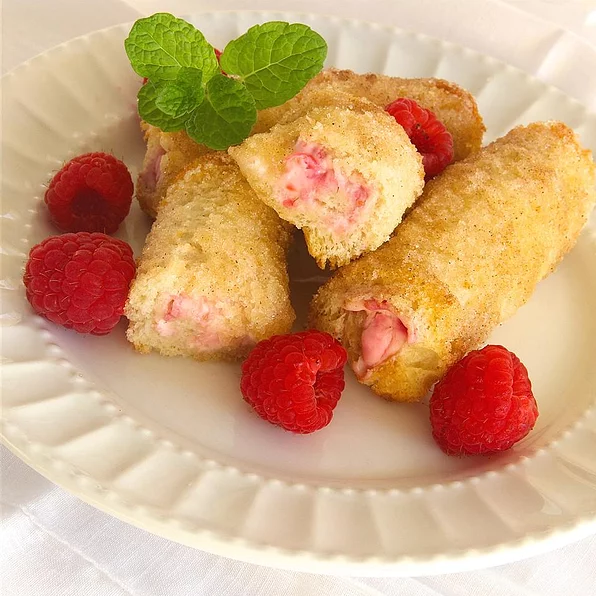

French Toast Roll-Ups
A delicious twist on French toast with a yummy cream cheese filling.

ingridients
- 1 (8 ounce) package cream cheese, softened
- 1 egg yolk
- 1 cup white sugar, divided
- 24 slices white bread, crusts removed
- 1 tablespoon ground cinnamon
- 3 tablespoons butter, melted
- Beat cream cheese, egg yolk, and 1/4 cup sugar together in a bowl until smooth. Pour melted butter into a separate shallow bowl. Mix remaining 3/4 cup sugar and cinnamon together in a third shallow bowl.
- Spread even amounts of the cream cheese mixture onto one side of each bread slice. Roll the bread into a cylinder around the cream cheese filling. Brush melted butter around the outside of each cylinder and roll the cylinders in the cinnamon-sugar mixture to coat.
- Arrange the rolls in a dish, cover with plastic wrap, and freeze for at least 2 hours.
- Preheat oven to 400 degrees F (200 degrees C).
- Transfer frozen rolls to a baking dish and bake in preheated oven until hot in the center, 10 to 12 minutes.Transfer frozen rolls to a baking dish and bake in preheated oven until hot in the center, 10 to 12 minutes.
back to main page